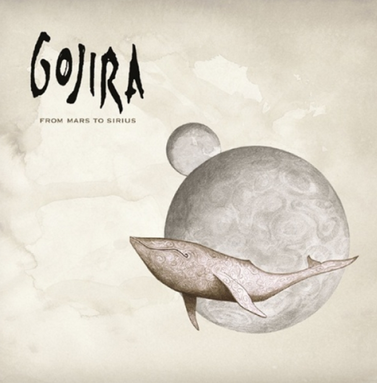

Formado en 2001 por los hermanos Duplantier (Joe y Mario, cantante-guitarrista y baterista respectivamente), Christian Andreu (guitarra) y Jean-Michel Labadie (bajo), Gojira se ha ganado sus rayas en la escena del metal internacional: ya sea con Metallica (que los eligió personalmente para debutar en Estados Unidos y Europa) o Lamb of God (que también los llevó de gira), el grupo de las Landas goza de índices de popularidad sin precedentes. que ha ido mucho más allá de nuestras fronteras.
- From Mars to Sirius - Anything that has a shape will crumble away, disappear We belong to the circle life of all creation We crawl and deny ourselves, refuse this evidence That we project our greatest fears on death And forget our power I want to live my life in close touch with the sacred Pacify the disturbances of the mind I face my own death Lower and lower is the pressure, i can feel the parts of me Collapsing one into the other Higher state of consciousness awaken, i can see the light of this next world Leading my soul reborn I find it hard to believe that this picture on the wall is everything I do understand all the prayers, life is so sharp and hurts so bad What does it mean to be dying, what if you take the guts and brain away? Is it this blood and heartbeat that you call life Every effort to ignore it is unavailing we all have to die Is it too late to dull the edges of the pain, i have to try This is an other dimension You can scatter ashes to the winds And even buried in the ground i'm still here